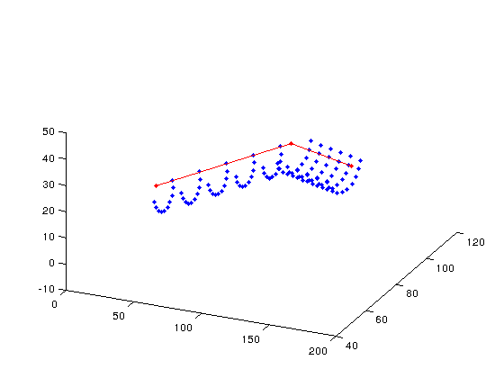

distribute_particle_streams
Distributes particles around streams as shown:
Stream
. o . <-particles
. .
. . . . .Version : 1.0
Author : George Kourakos
email: giorgk@gmail.com
web : http://groundwater.ucdavis.edu/msim
Date 09-May_2013
Department of Land Air and Water
University of California Davis
Contents
Usage
[xp yp zp id_stream] = distribute_particle_streams(streams, opt)
Input:
streams: is a structure with the following fields:
X: x coordinate
Y: y coordinate
Z: z coordinate
opt: is an option structure with the following fields:
Npsec: Number of particles per section. One section is illustrated above.
Dxsec: Distance between sections
radius : distance between the particle and the stream
Output:
xp yp, zp : coordinates of initial particle positions
id_stream : the id of the stream that each particle is associated with
Example
Define the stream:
streams.X = [0 100 200]; streams.Y = [100 100 50]; streams.Z = [0 25 50];
Define the particle distribution parameters
opt.Npsec = 10; opt.Dxsec = 20; opt.radius = 10;
Call the function and plot
[xp yp zp id_stream] = distribute_particle_streams(streams, opt); plot3(streams.X, streams.Y, streams.Z,'.-r') hold on plot3(xp,yp,zp,'.') view(24,36)